¿Qué es Viernes CRM?
Viernes CRM es un sistema de gestión de la relación con clientes (CRM) diseñado para equipos de venta. Reúne en un solo lugar la cartera de clientes, los prospectos, las oportunidades de negocio, la agenda de seguimiento, las cotizaciones y la comunicación interna del equipo.
Su objetivo es que ninguna venta se pierda por falta de seguimiento: cada lead tiene un estado, cada oportunidad tiene una etapa y un responsable, cada actividad tiene una fecha, y cada propuesta conserva su historial de estados.
El ciclo comercial que cubre el sistema
Módulos principales
| Módulo | Para qué sirve | Ubicación en el menú |
|---|---|---|
| Dashboard | Resumen visual de indicadores, pipeline, actividades y accesos rápidos. | Inicio |
| Clientes | Directorio de cuentas comerciales y sus contactos (decisores e influenciadores). | Ventas y CRM → Clientes |
| Mapa de Relaciones | Grafo interactivo de clientes, contactos, oportunidades, actividades y propuestas. | Ventas y CRM → Mapa de Relaciones |
| Leads | Prospectos en etapa temprana, con origen, estado y responsable. | Ventas y CRM → Leads |
| Oportunidades | Negociaciones con valor económico, probabilidad, etapa y fecha de cierre. | Ventas y CRM → Oportunidades |
| Pipeline | Tablero Kanban de oportunidades agrupadas por etapa comercial. | Ventas y CRM → Pipeline |
| Actividades | Agenda de llamadas, reuniones, tareas y seguimientos con etiquetas. | Ventas y CRM → Actividades |
| Propuestas | Cotizaciones con detalle de productos, descuento, total y flujo de aprobación. | Ventas y CRM → Propuestas |
| Productos | Catálogo de bienes y servicios que se ofrecen en el pipeline y las propuestas. | Ventas y CRM → Productos |
| Usuarios y roles | Altas, desactivación y permisos de las cuentas que acceden al CRM. | Administración → Usuarios y roles |
| Equipos | Grupos de trabajo con sus miembros para organizar la operación comercial. | Administración → Equipos |
| Mensajería | Sala general de chat para comunicar novedades a todo el equipo. | Botón “Mensajes” en la barra superior |
| Configuración | Espacio reservado para futuras opciones de configuración del CRM. | Administración → Configuración |
Cómo leer este manual
Pasos numerados
Sigue las listas en orden para completar una tarea de principio a fin.
Tablas de campos
Indican qué dato pide cada formulario y cuáles son obligatorios.
Capturas reales
Cada módulo incluye una imagen de referencia de la versión V1.
Convenciones de los avisos: ℹ️ Información ⚠️ Atención ✅ Recomendación 🔒 Permiso ⛔ Acción destructiva
Antes de empezar
Requisitos del equipo
Navegador actualizado
Google Chrome, Microsoft Edge o Firefox en su versión reciente. Se recomienda una pantalla de 1366 × 768 px o superior.
Docker Desktop activo
Necesario para Oracle Database 23c y Keycloak. Debe mostrarse “Running” antes de iniciar el sistema.
Java 21
El lanzador usa el JDK incluido en .tools\jdk21 o el Java 21 instalado en el equipo.
Node.js
Requerido para compilar y servir la interfaz Angular. La primera vez se ejecuta npm install.
Direcciones del sistema
| Servicio | Dirección | Uso |
|---|---|---|
| Frontend (CRM) | http://localhost:4200 |
Interfaz que usan los vendedores, jefes y administradores. |
| Backend (API) | http://localhost:8080 |
Servicio REST que consume el frontend. |
| Swagger UI | http://localhost:8080/swagger-ui.html |
Documentación interactiva de la API (perfil técnico). |
| Keycloak | http://localhost:8180 |
Portal de identidad donde se inicia sesión (realm viernes-realm). |
Credencial de demostración
admin@viernes.com · contraseña Admin12345.
Tiene los roles ADMIN, JEFE y VENDEDOR, por lo que ve todo el sistema.
En un entorno real, cada persona debe usar su propia cuenta y la contraseña
de demostración debe cambiarse.
Inicio del sistema (responsable del equipo)
- Abre Docker Desktop y espera a que termine de iniciar. Si no está activo, los contenedores de base de datos y Keycloak no arrancan.
- Ejecuta
activar-sistema.batdesde la carpeta raíz del proyecto. El lanzador verifica Java, Docker, Oracle y Keycloak, y abre el backend y el frontend en consolas separadas. - Espera el arranque completo. La primera vez Oracle puede tardar más; el backend solo debe recibir peticiones cuando la base esté disponible.
- Verifica que el frontend abra en
http://localhost:4200y que el backend responda enhttp://localhost:8080/actuator/health. - Inicia sesión con tu cuenta. Si es la primera vez, usa la credencial de demostración y luego solicita al ADMIN tu usuario definitivo.
Consulta de DNI y RUC (opcional)
El botón Consultar del formulario de clientes obtiene el nombre o la razón social desde RENIEC/SUNAT mediante el servicio APIsPERU. Es una función opcional: el resto del CRM funciona aunque no esté configurada.
- El administrador configura el token en
viernes-backend\.env.localcon la variableAPISPERU_TOKEN. - Cada usuario puede realizar hasta 20 consultas por minuto; el plan externo gratuito suele permitir 1.000 consultas al mes.
- Si el token no está configurado, el botón muestra el mensaje “La consulta externa DNI/RUC no está configurada”. Puedes registrar al cliente manualmente.
Acceso al sistema
La autenticación de Viernes CRM se delega a Keycloak: el CRM no valida contraseñas en su propio formulario de acceso. Al iniciar sesión, el navegador te redirige al portal de identidad y, tras validar tus credenciales, vuelve al CRM con una sesión activa.
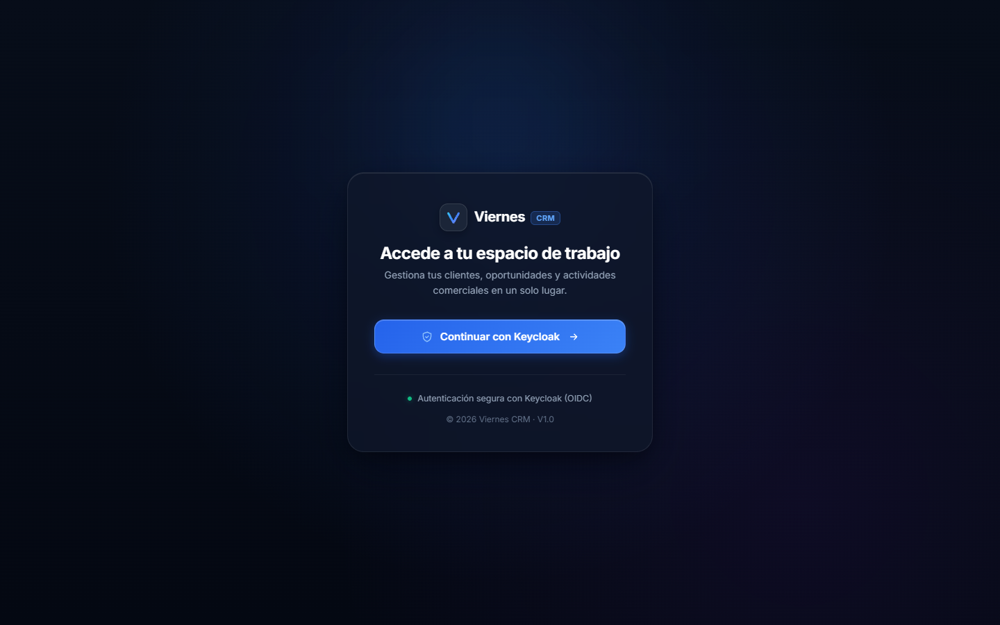
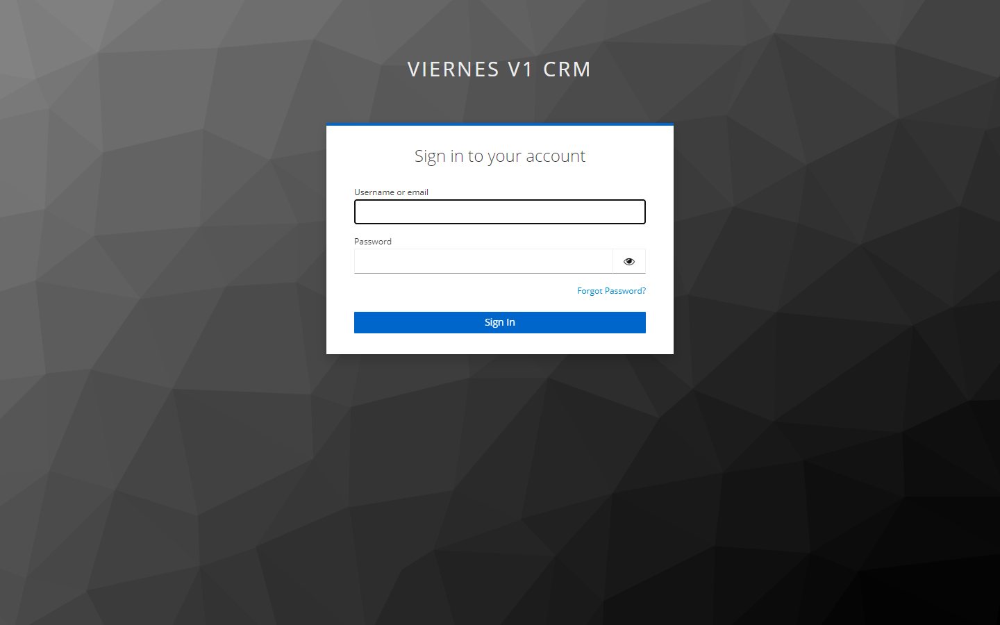
Iniciar sesión paso a paso
- Abre
http://localhost:4200en el navegador. - En la pantalla de bienvenida, haz clic en “Continuar con Keycloak”.
- Serás redirigido al portal de Keycloak. Escribe tu correo y tu contraseña.
- Haz clic en Iniciar sesión. Keycloak valida la cuenta y te devuelve al CRM.
- Si todo es correcto, verás el Dashboard con tu nombre en la esquina superior derecha.
Cerrar sesión
Haz clic en tu cápsula de usuario (arriba a la derecha), en la parte inferior del menú desplegable elige “Cerrar Sesión”. El CRM cierra la sesión de Keycloak y vuelve a la pantalla de acceso.
Si no puedes ingresar
| Situación | Posible causa | Qué hacer |
|---|---|---|
| No carga la pantalla de acceso | El frontend no está iniciado. | Verifica la consola del frontend y que http://localhost:4200 responda. |
| Keycloak no abre o da error de conexión | El contenedor de Keycloak no está activo. | Inicia Docker Desktop y vuelve a ejecutar activar-sistema.bat. |
| “Credenciales inválidas” | Correo o contraseña incorrectos, o la cuenta no existe en Keycloak. | Revisa mayúsculas y Bloq Mayús. Si persiste, solicita al ADMIN la creación o el restablecimiento de tu cuenta. |
| Vuelve al login una y otra vez | La sesión expiró o el token no es válido. | Cierra el navegador o limpia la sesión del sitio y vuelve a ingresar. |
La interfaz del CRM
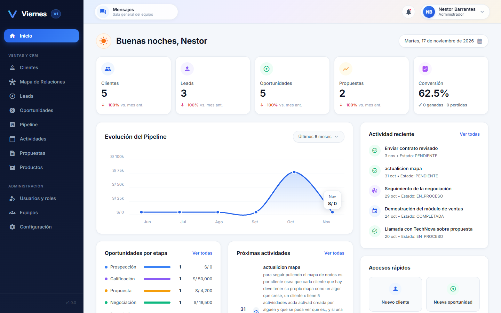
Menú lateral
El menú se organiza en tres bloques. Las opciones visibles dependen de tu rol.
| Bloque | Opciones | Quién lo ve |
|---|---|---|
| Inicio | Dashboard | Todos los usuarios autenticados. |
| Ventas y CRM | Clientes, Mapa de Relaciones, Leads, Oportunidades, Pipeline, Actividades, Propuestas, Productos. | Todos los usuarios autenticados. |
| Administración | Usuarios y roles (solo ADMIN), Equipos (ADMIN/JEFE), Configuración (solo ADMIN). | Se muestra el bloque completo a ADMIN y JEFE; las opciones exclusivas de ADMIN se ocultan a los demás. |
Barra superior
- ☰ Menú móvil: en pantallas pequeñas, muestra u oculta el menú lateral.
- 💬 Mensajes: abre la sala general del equipo. El contador rojo indica mensajes no leídos.
- 🔔 Notificaciones: abre un panel con avisos de cartera y agenda. En esta versión el panel muestra avisos de referencia; no genera alertas nuevas automáticamente.
- Cápsula de usuario: muestra tus iniciales, nombre y rol. Desde allí puedes ir al Dashboard, abrir la gestión de usuarios (solo ADMIN) o cerrar sesión.
Patrones comunes de todas las pantallas
🔎 Buscador
Filtra la tabla mientras escribes. La “×” limpia el texto. Cada módulo indica qué campos busca.
↕️ Ordenamiento
Haz clic en el encabezado de una columna para ordenar ascendente o descendente.
✏️ Acciones por fila
Los íconos de la columna Acciones permiten ver, editar, desactivar o eliminar un registro.
🗑️ Confirmaciones
Las acciones destructivas piden confirmación. Lee el mensaje antes de aceptar: algunas bajas son permanentes.
403 Acceso denegado. En ese caso solicita
la operación a un ADMIN o JEFE según corresponda.
Roles del sistema
ADMIN — Administrador
Acceso total: gestiona usuarios, catálogos, equipos y puede eliminar registros de negocio.
JEFE — Jefe de equipo
Supervisa la operación, administra catálogos y equipos, y aprueba, rechaza o cancela propuestas.
VENDEDOR — Ejecutivo comercial
Gestiona clientes, leads, oportunidades, actividades y propuestas del día a día.
La matriz completa de permisos está en la sección 20.
Dashboard
El Dashboard es la primera pantalla después de iniciar sesión. Resume el estado de la cartera y permite llegar rápido a las tareas más frecuentes. Los datos se calculan a partir de los registros reales del CRM.
Tarjetas de indicadores (KPI)
| Indicador | Qué muestra | Cómo interpretarlo |
|---|---|---|
| Clientes | Cantidad total de clientes registrados. | Mide el tamaño de la cartera. La flecha compara el mes actual con el anterior según la fecha de creación. |
| Leads | Cantidad total de prospectos registrados. | Mide la entrada de nuevas oportunidades de negocio. |
| Oportunidades | Cantidad total de negociaciones registradas. | Mide el volumen del pipeline, sin importar su etapa. |
| Propuestas | Cantidad total de propuestas emitidas. | Mide la actividad comercial formal hacia los clientes. |
| Conversión | Porcentaje de oportunidades sobre el total de leads + oportunidades. | Debajo se indica cuántas oportunidades están ganadas y cuántas perdidas. |
La conversión no es la tasa de cierre: es el peso de las oportunidades dentro del embudo. Para la tasa de cierre, compara las oportunidades ganadas con el total.
Paneles del Dashboard
📈 Evolución del Pipeline
Gráfico de los últimos 6 meses con el valor de las oportunidades registradas. Si aún no hay datos, muestra un acceso para registrar la primera oportunidad.
🧭 Oportunidades por etapa
Lista las etapas del pipeline con su cantidad, porcentaje y valor acumulado. El enlace “Ver todas” abre Oportunidades.
📅 Próximas actividades
Muestra las siguientes actividades pendientes con día, tipo, cliente y hora. Si no hay tareas, indica que la agenda está al día.
🕘 Actividad reciente
Historial breve de las últimas actividades registradas. El enlace “Ver todas” abre el módulo de Actividades.
⚡ Accesos rápidos
Cuatro botones para crear un cliente, una oportunidad, una actividad o una propuesta sin pasar por el menú.
🌤️ Saludo y fecha
La cabecera muestra tu nombre y la fecha actual. Es solo informativa.
Clientes y contactos
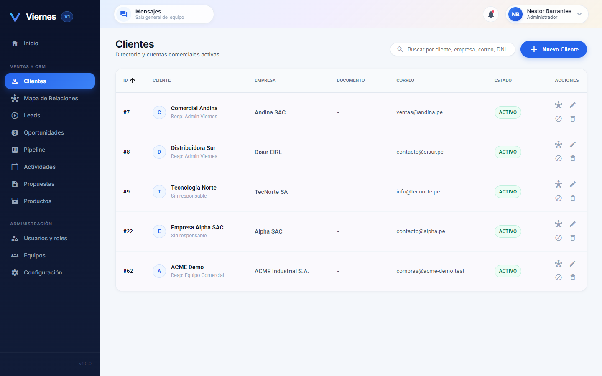
Listado de clientes
La tabla muestra la cartera completa. Puedes buscar por nombre, empresa, correo, DNI o RUC, y ordenar haciendo clic en los encabezados.
| Columna | Qué contiene |
|---|---|
| ID | Número interno del cliente. |
| Cliente | Nombre y responsable asignado. El círculo muestra la inicial del nombre. |
| Empresa | Razón social o empresa asociada. |
| Documento | Tipo y número de DNI o RUC; guion si no se registró. |
| Correo | Correo de contacto principal. |
| Estado | ACTIVO o INACTIVO. |
| Acciones | Mapa de relaciones, editar, desactivar (si está activo) y eliminar. |
Registrar un cliente
- Haz clic en “Nuevo Cliente” (o en “Registrar primer Cliente” si la cartera está vacía).
- Completa los datos. Los campos con * son obligatorios.
- Si tienes DNI o RUC, usa el botón de lupa para autocompletar datos oficiales (ver más abajo).
- Haz clic en “Guardar”. El cliente aparece en la tabla con estado ACTIVO o INACTIVO según lo elegido.
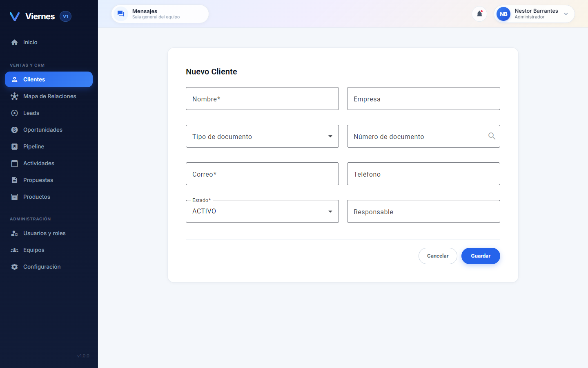
| Campo | Obligatorio | Descripción |
|---|---|---|
| Nombre | Sí | Nombre de la persona o de la cuenta comercial. |
| Empresa | No | Razón social o empresa. Se autocompleta al consultar un RUC. |
| Tipo de documento | No | Sin documento, DNI o RUC. |
| Número de documento | Condicional | 8 dígitos para DNI y 11 para RUC. Debe coincidir con el tipo elegido. |
| Correo | Sí | Correo de contacto; debe tener formato válido. |
| Teléfono | No | Teléfono o celular de contacto. |
| Estado | Sí | ACTIVO o INACTIVO. Un cliente inactivo conserva su historial. |
| Responsable | No | Persona a cargo de la cuenta. Se muestra bajo el nombre en el listado. |
Consultar DNI o RUC
- Selecciona el tipo de documento (DNI o RUC). El botón de lupa se habilita.
- Escribe el número completo: 8 dígitos para DNI, 11 para RUC.
- Haz clic en la lupa. Si la consulta es exitosa, verás el nombre o razón social y, cuando existan, el estado y la condición.
- El formulario se completa automáticamente: en DNI con el nombre completo; en RUC con la razón social en Empresa y, si estaba vacío, el nombre y el primer teléfono.
- Revisa los datos, completa el correo y guarda.
Contactos del cliente
Los contactos representan a las personas de la empresa: gerentes, compradores, usuarios técnicos, etc. Se administran dentro de la edición del cliente, en la tarjeta “Contactos”.
- Abre el cliente con el ícono Editar (lápiz).
- En la sección Contactos, completa Nombre, Apellido, Cargo, Correo y Teléfono.
- Marca “Contacto principal” si es la persona de referencia de la cuenta.
- Haz clic en “Agregar Contacto”. El contacto aparece en la tabla superior.
- Para modificarlo, usa el lápiz; para quitarlo, usa el tacho de basura y confirma.
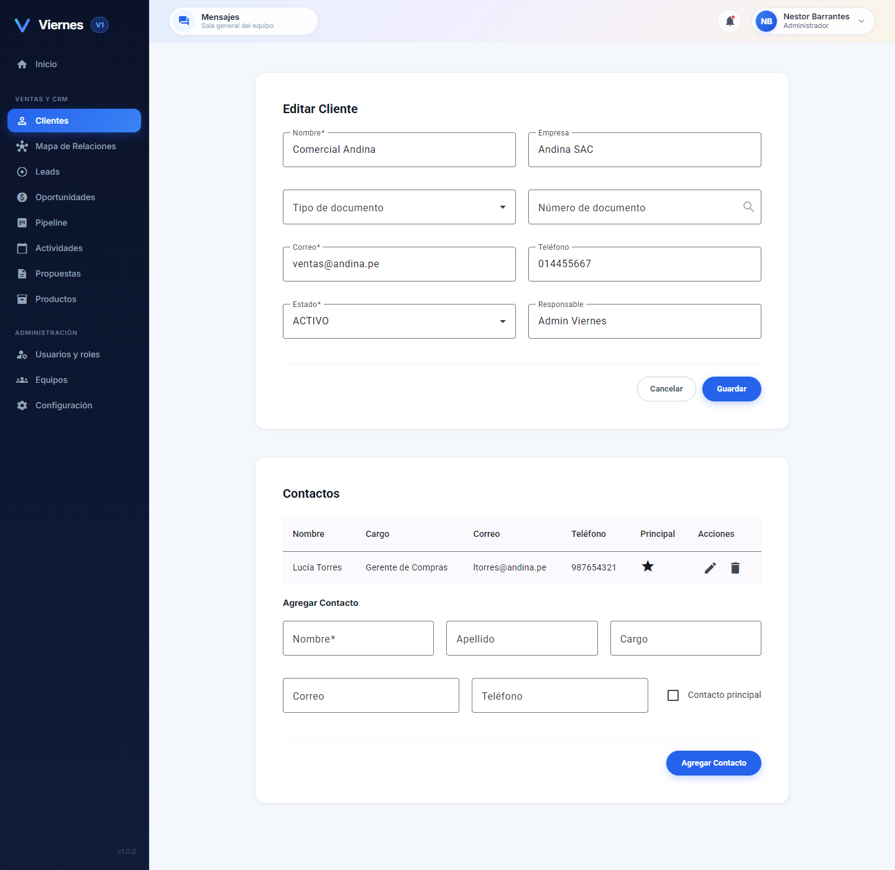
| Campo de contacto | Obligatorio | Descripción |
|---|---|---|
| Nombre | Sí | Nombre de la persona de contacto. |
| Apellido | No | Apellido de la persona. |
| Cargo | No | Puesto o rol dentro de la empresa. |
| Correo | No | Correo directo del contacto. |
| Teléfono | No | Teléfono directo. |
| Principal | No | Marca al contacto de referencia. Se distingue con una estrella. |
Editar, desactivar o eliminar
| Acción | Qué hace | Cuándo usarla |
|---|---|---|
| ✏️ Editar | Abre el formulario con los datos actuales y permite modificarlos. | Correcciones, cambios de responsable o actualización de contactos. |
| 🚫 Desactivar | Cambia el estado a INACTIVO. El registro y su historial se conservan. | Cuentas sin actividad reciente que podrías reactivar. |
| 🗑️ Eliminar | Borra el cliente de forma permanente, previa confirmación. | Solo duplicados o registros creados por error. Requiere rol ADMIN. |
Ver el mapa del cliente
El ícono de red (hub) abre el Mapa de Relaciones centrado en ese cliente. Es la forma más rápida de entender con qué contactos, oportunidades, actividades y propuestas está conectado.
Mapa de Relaciones
El Mapa de Relaciones representa clientes, contactos, oportunidades, actividades y propuestas como nodos conectados. Sirve para responder preguntas como: ¿qué contactos participan en esta oportunidad?, ¿qué actividades están vinculadas a este cliente?, ¿qué propuestas se emitieron para esta cuenta?
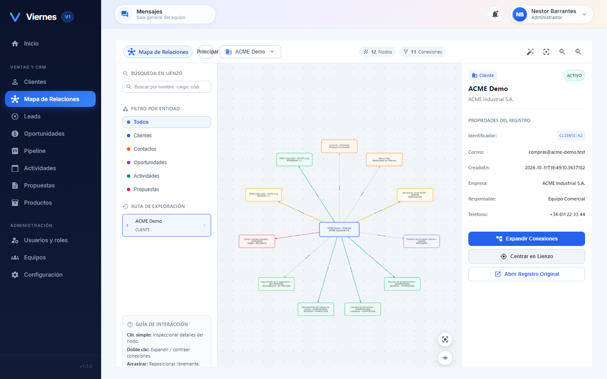
Controles de la barra superior
| Control | Función |
|---|---|
| 🏠 Principal | Vuelve al registro raíz y recentra el lienzo. |
| Cambiar Cliente… | Elige otra cuenta principal; el mapa se reconstruye alrededor de ella. |
| Nodos / Conexiones | Indicadores de cuántos registros y vínculos se están mostrando. |
| ✨ Reorganizar | Vuelve a distribuir los nodos para mejorar la lectura. |
| 🎯 Centrar | Ajusta el zoom para ver todo el grafo. |
| ➖ / ➕ | Alejar o acercar el lienzo. |
Panel izquierdo
- Búsqueda en lienzo: escribe un nombre, cargo o código; el mapa resalta las coincidencias.
- Filtro por entidad: muestra solo Clientes, Contactos, Oportunidades, Actividades o Propuestas. “Todos” restaura la vista completa.
- Ruta de Exploración: historial de los nodos que has abierto, en orden. Haz clic en cualquier paso para volver.
- Guía de interacción: recuerda los gestos disponibles.
Cómo interactuar con el lienzo
- Clic simple en un nodo: lo selecciona y muestra sus propiedades en el inspector derecho.
- Doble clic en un nodo: expande o contrae sus conexiones.
- Arrastrar un nodo: lo reposiciona para ordenar visualmente la red.
- Rueda del mouse o scroll: acerca o aleja el zoom.
- Botón “Expandir Conexiones”: carga los vínculos del nodo seleccionado sin salir del mapa.
Inspector derecho
Al seleccionar un nodo verás su tipo, estado, identificador y propiedades. Desde allí puedes expandir o contraer conexiones, centrar el nodo, volver al principal o abrir el registro original en su módulo correspondiente.
Leads
Un lead es un contacto potencial que aún no ha sido calificado. El módulo permite registrar su origen, estado, responsable y fecha de seguimiento para no perder el interés inicial.
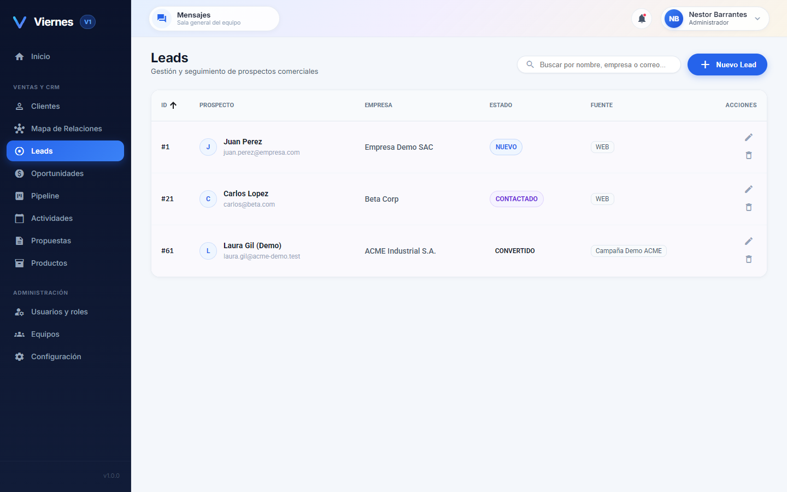
Listado de leads
| Columna | Qué contiene |
|---|---|
| ID | Número interno del lead. |
| Prospecto | Nombre y correo. Si no hay correo, indica “Sin correo”. |
| Empresa | Empresa asociada o guion. |
| Estado | Etapa actual del prospecto. |
| Fuente | Origen del lead (web, referido, feria…). Si está vacío, muestra “Directo”. |
| Acciones | Editar y eliminar. |
Usa el buscador para filtrar por nombre, empresa o correo. La lista se puede ordenar por cualquiera de sus columnas.
Registrar o editar un lead
El formulario se abre como ventana emergente. Se divide en dos bloques: datos del prospecto y seguimiento comercial.
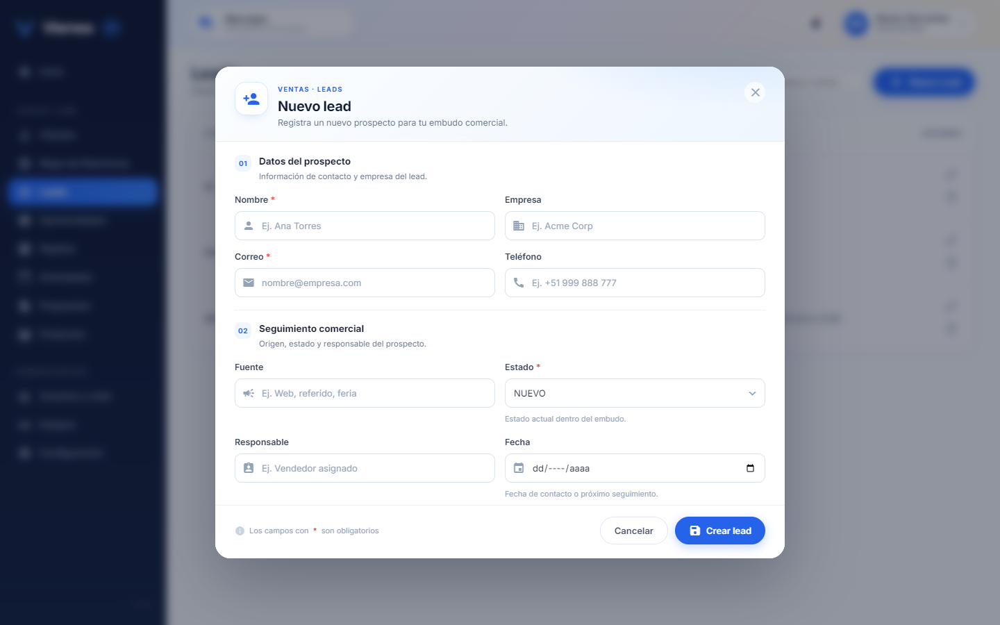
| Campo | Obligatorio | Descripción |
|---|---|---|
| Nombre | Sí | Nombre del prospecto o de la persona de contacto. |
| Empresa | No | Empresa u organización a la que pertenece. |
| Correo | Sí | Correo principal; debe tener formato válido. |
| Teléfono | No | Teléfono o celular de contacto. |
| Fuente | No | Origen del lead: web, referido, feria, campaña, etc. |
| Estado | Sí | Nuevo, Contactado, Calificado, Convertido o Descartado. |
| Responsable | No | Vendedor asignado al seguimiento. |
| Fecha | No | Fecha de contacto o del próximo seguimiento. |
Estados del lead
| Estado | Significado | Siguiente paso sugerido |
|---|---|---|
| NUEVO | Se acaba de registrar y aún no se ha contactado. | Programar una llamada o correo de primer contacto. |
| CONTACTADO | Ya hubo comunicación inicial. | Validar interés, necesidad y presupuesto; agendar seguimiento. |
| CALIFICADO | Tiene interés y condiciones para una oportunidad. | Crear la oportunidad en el pipeline y vincular al cliente. |
| CONVERTIDO | Se transformó en cliente u oportunidad. | Conservar el lead como historial y continuar en Oportunidades. |
| DESCARTADO | No hay interés o no cumple el perfil. | Registrar el motivo en una actividad o nota de seguimiento y no volver a contactar sin un motivo nuevo. |
Oportunidades y Pipeline
Una oportunidad es una negociación concreta con un cliente potencial o existente. Tiene un valor económico, una probabilidad de cierre, una etapa en el embudo, un responsable y una fecha estimada de cierre.
Dos formas de ver el pipeline
📋 Vista Lista
Tabla con ID, oportunidad, cliente, valor, probabilidad, etapa y acciones. Ideal para buscar, ordenar y revisar cifras.
🗂️ Vista Pipeline
Tablero Kanban con una columna por etapa. Ideal para ver el avance global y mover negociaciones.
Cambia de vista con el selector Lista | Pipeline de la barra superior. El total en cartera se muestra junto al título de la pantalla.
Columnas de la vista Lista
| Columna | Qué contiene |
|---|---|
| ID | Número interno de la oportunidad. |
| Oportunidad | Nombre y fecha de cierre estimada (o “Sin fecha estimada”). |
| Cliente / Cuenta | Nombre de la cuenta asociada. |
| Valor | Monto en soles (PEN). |
| Probabilidad | Porcentaje y barra de avance. |
| Etapa | Etapa actual del pipeline. |
| Acciones | Ver detalle/relaciones, editar y eliminar. |
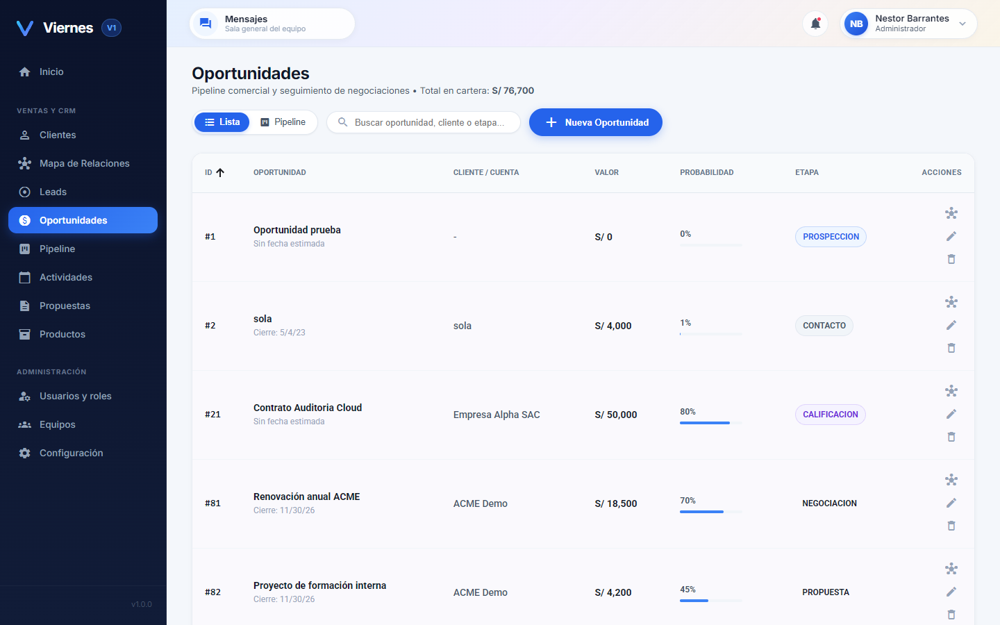
Mover oportunidades en el Pipeline
- Entra a Pipeline desde el menú lateral o cambia la vista en Oportunidades.
- Localiza la tarjeta de la oportunidad en su columna actual.
- Arrastra la tarjeta a otra columna para cambiar la etapa, o usa las flechas ‹ › del pie de la tarjeta.
- También puedes abrir el menú de la etiqueta de etapa y elegir “Mover a etapa”.
- El cambio se guarda automáticamente. Si falla, la tarjeta vuelve a su posición anterior y se muestra un aviso.
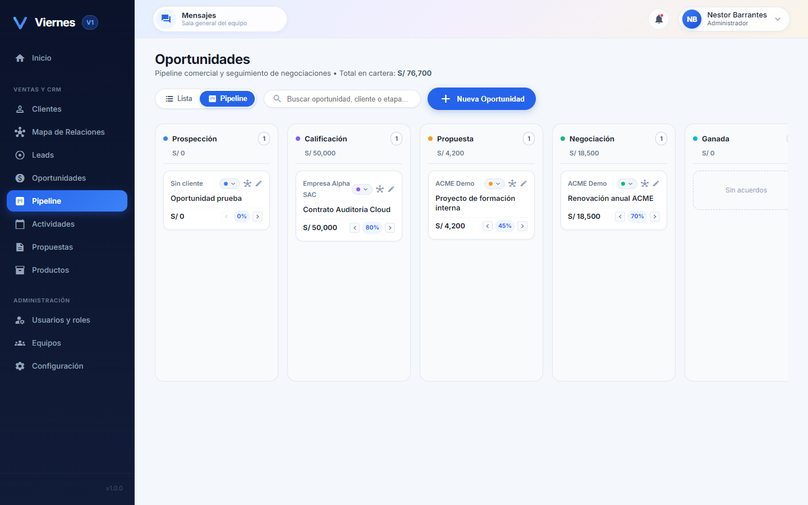
Crear una oportunidad
Desde el listado, el botón “Nueva Oportunidad” abre una ventana con pestañas: General, Contactos, Productos y Colaboradores. En la creación solo se muestra la pestaña General; las demás se habilitan al editar.
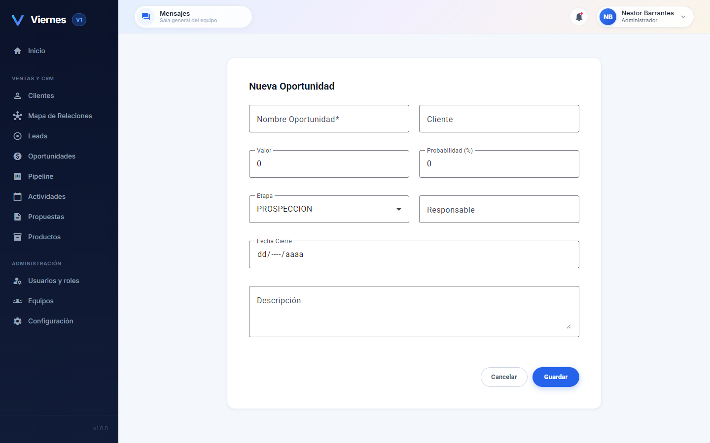
| Campo | Obligatorio | Descripción |
|---|---|---|
| Nombre de la oportunidad | Sí | Descripción corta del negocio, por ejemplo “Implementación de auditoría 2027”. |
| Cliente | Sí | Nombre de la cuenta. El campo sugiere los clientes registrados mientras escribes. |
| Valor | Sí | Monto estimado del negocio, en soles (PEN). |
| Probabilidad (%) | Sí | Valor entre 0 y 100 que refleja la confianza de cierre. |
| Etapa | Sí | Prospección, Contacto, Calificación, Propuesta, Negociación, Ganada o Perdida. |
| Responsable | Sí | Usuario del CRM a cargo de la negociación. |
| Fecha de cierre | Sí | Fecha estimada de cierre. Se puede limpiar con la “×”. |
| Descripción | No | Alcance, contexto o condiciones. Máximo 500 caracteres. |
Detalle de la oportunidad
Haz clic en el ícono de red (hub) de la fila o en la tarjeta del Kanban para abrir el detalle. La parte superior resume la negociación:
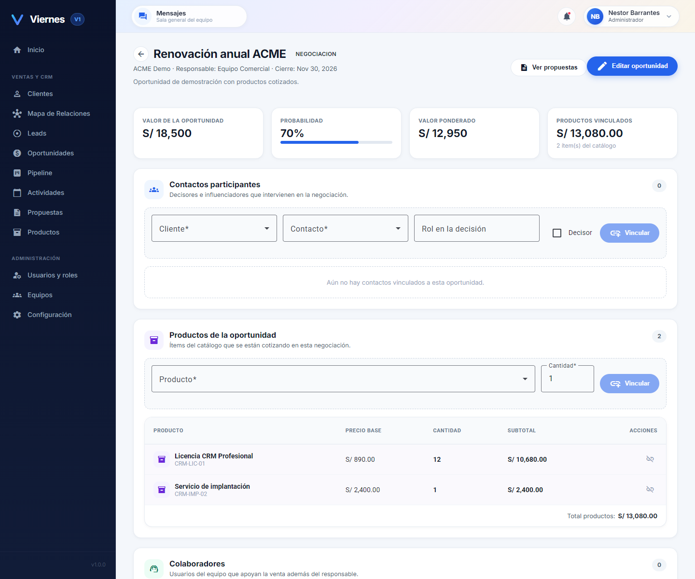
| Indicador | Cálculo / significado |
|---|---|
| Valor de la oportunidad | Monto total del negocio. |
| Probabilidad | Porcentaje de cierre con barra visual. |
| Valor ponderado | valor × (probabilidad ÷ 100). Estima el ingreso esperado según la confianza. |
| Productos vinculados | Suma de precio base × cantidad de los productos asociados. |
Contactos participantes
Identifica a los decisores e influenciadores de la negociación. Para vincular uno:
- Selecciona el Cliente. El sistema carga sus contactos disponibles.
- Elige el Contacto. Si el cliente no tiene contactos, primero agrégalos en el módulo Clientes.
- Escribe el Rol en la decisión (económico, técnico, usuario, etc.).
- Marca “Decisor” si la persona aprueba o puede bloquear la compra.
- Haz clic en “Vincular”. Luego puedes editar el rol/decisor o quitar el contacto con los íconos de la fila.
Productos de la oportunidad
- Selecciona un Producto del catálogo. La lista muestra los productos registrados; prioriza los que estén ACTIVOS.
- Indica la Cantidad (mínimo 1).
- Haz clic en “Vincular”. La tabla muestra precio base, cantidad y subtotal.
- El total de productos se actualiza al pie. Para quitar un ítem, usa el ícono de desvincular.
Colaboradores
Son usuarios del CRM que apoyan la venta además del responsable. Selecciona el usuario y haz clic en “Vincular”. Sirve para dar visibilidad al equipo de preventa, soporte o gerencia.
Actividades y etiquetas
Las actividades son las tareas concretas que mueven una venta: llamadas, reuniones, tareas internas y seguimientos. Cada actividad tiene tipo, estado, fecha y hora, y puede vincularse a un cliente, lead u oportunidad.
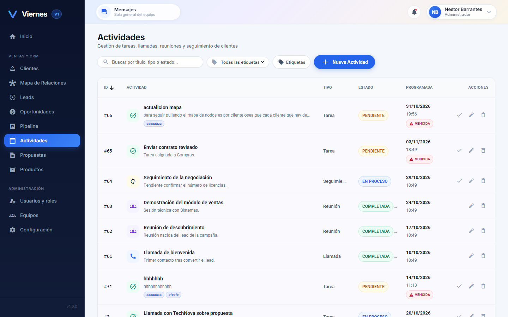
Listado de actividades
| Columna | Qué contiene |
|---|---|
| ID | Número interno. |
| Actividad | Ícono del tipo, título, descripción y etiquetas (máximo 3 visibles; el resto se resume con “+N”). |
| Tipo | Llamada, Reunión, Tarea o Seguimiento. |
| Estado | Pendiente, En proceso, Completada o Cancelada. |
| Programada | Fecha y hora. Si ya pasó y sigue pendiente, muestra el distintivo Vencida. |
| Acciones | Marcar completada (si no lo está), editar y eliminar. |
Tipos de actividad
📞 Llamada
Contacto telefónico para calificar, dar seguimiento o cerrar una negociación.
👥 Reunión
Encuentro presencial o virtual con el cliente y su equipo.
✅ Tarea
Trabajo interno: preparar una propuesta, enviar documentación, coordinar con soporte.
🔁 Seguimiento
Recordatorio para retomar una conversación o verificar una respuesta pendiente.
Estados de la actividad
| Estado | Significado | Cuándo usarlo |
|---|---|---|
| PENDIENTE | Aún no se inició. | Al programar una actividad futura. |
| EN PROCESO | Se está ejecutando o está en curso. | Reuniones largas, tareas con varios pasos o seguimientos abiertos. |
| COMPLETADA | Ya se realizó. | Al terminar la llamada, reunión o tarea. |
| CANCELADA | Ya no se realizará. | Cuando el contacto cancela o la tarea deja de tener sentido. |
Crear una actividad
- Haz clic en “Nueva Actividad”.
- Elige el tipo en el selector visual (Llamada, Reunión, Tarea o Seguimiento).
- Escribe un título o asunto claro y, si hace falta, una descripción de hasta 500 caracteres.
- Define el estado inicial (normalmente Pendiente).
- Selecciona fecha y hora. El calendario se abre al hacer clic en el ícono.
- Elige la vinculación: Ninguno, Cliente, Lead u Oportunidad. Si eliges uno, selecciona el registro específico.
- Opcionalmente, agrega hasta 8 etiquetas.
- Haz clic en “Crear actividad”.
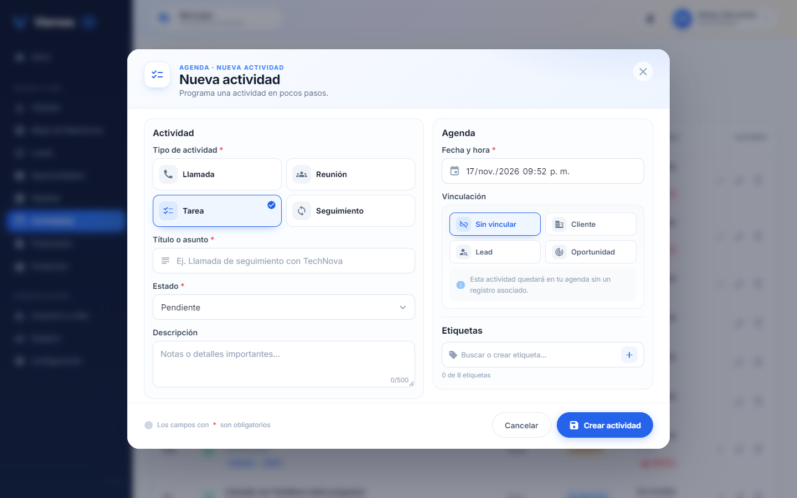
| Campo | Obligatorio | Descripción |
|---|---|---|
| Tipo de actividad | Sí | Llamada, Reunión, Tarea o Seguimiento. |
| Título o asunto | Sí | Resumen corto de la tarea. |
| Estado | Sí | Pendiente, En proceso, Completada o Cancelada. |
| Descripción | No | Notas o detalles importantes (máx. 500). |
| Fecha y hora | Sí | Momento programado de la actividad. |
| Vinculación | No | Ninguno, Cliente, Lead u Oportunidad. Permite conectar la agenda con el registro comercial. |
| Etiquetas | No | Hasta 8 etiquetas del catálogo global. |
Etiquetas
Las etiquetas permiten clasificar actividades por tema, prioridad o campaña (“seguimiento prioritario”, “postventa”, “cobranza”, etc.). Cada etiqueta tiene nombre, color, descripción y estado activa/archivada.
- Filtrar: usa el selector “Todas las etiquetas” de la barra superior.
- Gestionar catálogo: el botón “Etiquetas” está disponible para ADMIN y JEFE.
- Crear: define nombre (máx. 40), color y descripción (máx. 160).
- Archivar: la etiqueta deja de ofrecerse en el selector, pero se conserva en el historial de actividades.
- Reactivar: vuelve a estar disponible para nuevas actividades.
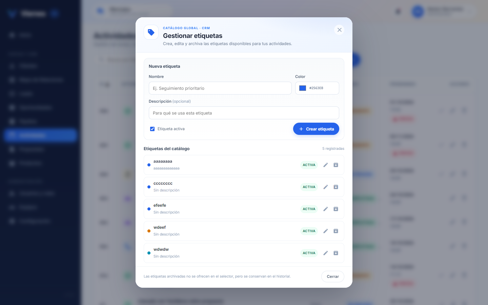
Completar y controlar vencimientos
En la fila de una actividad no completada aparece el ícono ✓: al hacer clic, el estado pasa a COMPLETADA. Si la fecha programada ya pasó y la actividad sigue pendiente, la tabla muestra el distintivo Vencida.
Propuestas
Una propuesta es la oferta económica que envías a un cliente a partir de una oportunidad. Incluye los productos o servicios cotizados, cantidades, precios, descuentos, fechas y observaciones, y recorre un flujo de aprobación antes de considerarse cerrada.
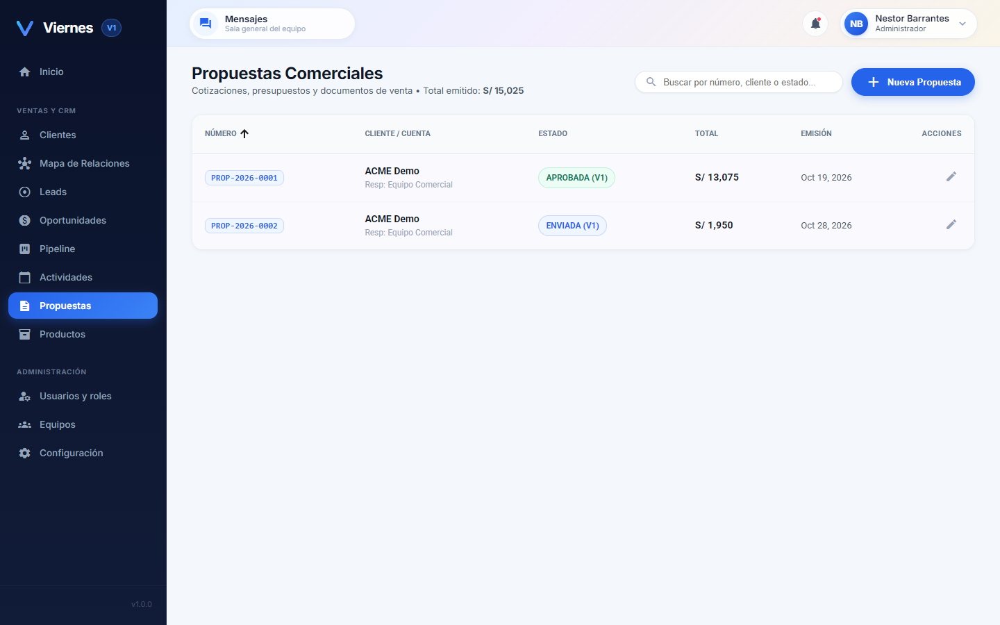
Listado de propuestas
| Columna | Qué contiene |
|---|---|
| Número | Correlativo de la propuesta (ordenable). |
| Cliente / Cuenta | Cliente destinatario de la oferta. |
| Estado | Borrador, Enviada, Aprobada, Rechazada o Cancelada. |
| Total | Monto final luego de aplicar el descuento. |
| Emisión | Fecha en que se generó la propuesta. |
| Acciones | Ver / Editar y, solo en borradores, Eliminar. |
La barra superior permite buscar por número, cliente o estado y ordenar las columnas. Si llegas desde el detalle de una oportunidad, verás un filtro activo con el número de esa oportunidad; usa la × para quitarlo y volver a ver todas las propuestas.
Estados y flujo de aprobación
| Estado | Significado | Acciones disponibles |
|---|---|---|
| BORRADOR | Propuesta en preparación; se puede editar por completo. | Guardar cambios, Enviar, Cancelar propuesta, Eliminar. |
| ENVIADA | Ya se presentó al cliente y queda en solo lectura. | Aprobar, Rechazar, Cancelar propuesta. |
| APROBADA | El cliente aceptó la propuesta. | Consulta. No admite más cambios de estado. |
| RECHAZADA | El cliente no aceptó la oferta. | Consulta. Puedes crear una nueva propuesta si corresponde. |
| CANCELADA | La propuesta se descartó antes de resolverse. | Consulta. No admite más cambios de estado. |
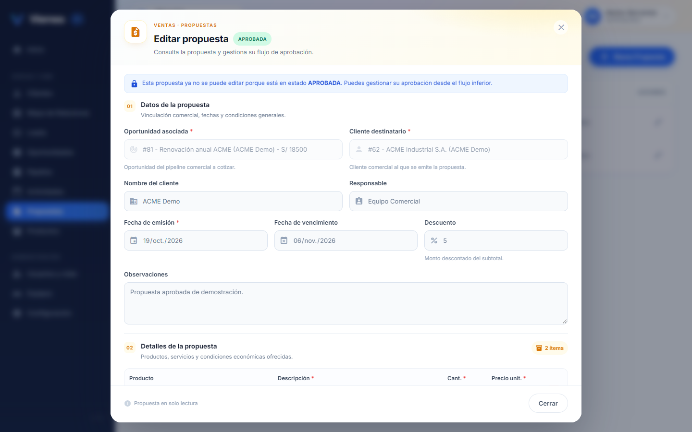
Crear una propuesta
- Haz clic en “Nueva Propuesta”.
- Selecciona la oportunidad asociada. Esta selección ayuda a vincular la venta con el pipeline.
- Selecciona el cliente destinatario. El nombre del cliente se completa automáticamente.
- Revisa el responsable y define la fecha de emisión; agrega la fecha de vencimiento si la oferta tiene vigencia.
- Si corresponde, ingresa un descuento en monto (no en porcentaje).
- Escribe las observaciones: condiciones, alcance o notas para el cliente.
- En Detalles, pulsa “Agregar detalle” y completa producto, descripción, cantidad y precio unitario.
- Verifica el subtotal, el descuento y el total estimado antes de guardar.
- Haz clic en “Crear propuesta”. La propuesta nace en estado BORRADOR.
- Cuando esté lista, ábrela y pulsa “Enviar” para pasarla a ENVIADA.
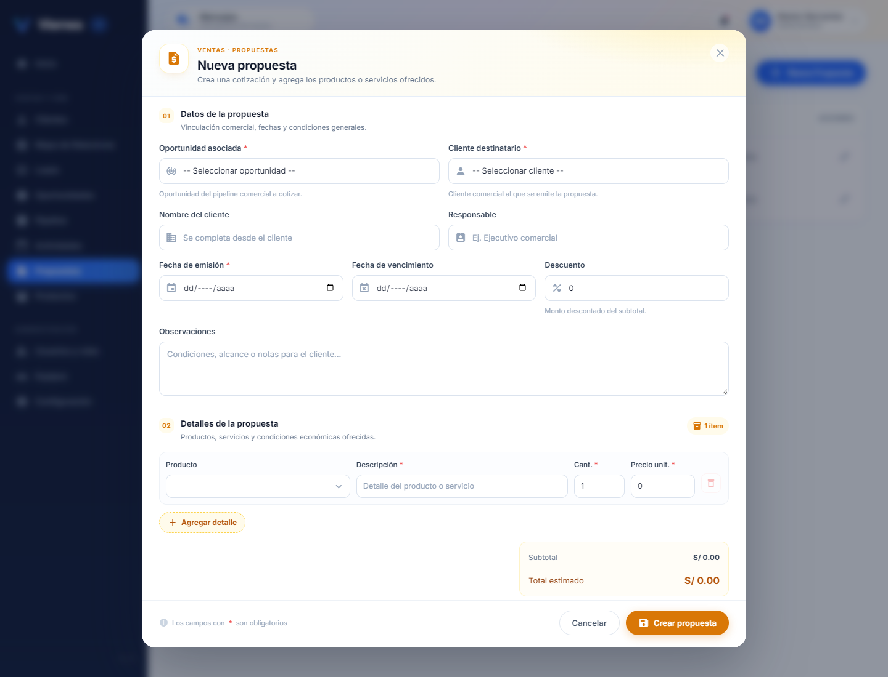
Campos de la propuesta
| Campo | Obligatorio | Descripción |
|---|---|---|
| Oportunidad asociada | Sí | Negocio del pipeline que origina la cotización. |
| Cliente destinatario | Sí | Cliente que recibirá la propuesta. |
| Nombre del cliente | No | Se completa desde el cliente; puede ajustarse como referencia. |
| Responsable | No | Ejecutivo comercial a cargo de la oferta. |
| Fecha de emisión | Sí | Fecha formal de la propuesta. |
| Fecha de vencimiento | No | Vigencia de la oferta. |
| Descuento | No | Monto descontado del subtotal. Debe ser coherente con el total. |
| Observaciones | No | Condiciones, alcance o notas para el cliente. |
Detalles y cálculo
Cada línea de detalle acepta un producto del catálogo o un ítem libre. Al elegir un producto se completan automáticamente la descripción y el precio base, que puedes ajustar. La descripción es obligatoria, la cantidad mínima es 1 y el precio unitario no puede ser negativo.
Cómo se calcula el total
- Subtotal = suma de (cantidad × precio unitario) de todas las líneas.
- Total estimado = subtotal − descuento.
El descuento es un monto fijo, no un porcentaje.
Productos
El catálogo de productos concentra lo que vendes: licencias, servicios, planes o cualquier ítem cotizable. Cada producto tiene código, nombre, categoría, precio base, estado y descripción, y se usa como base para las líneas de una propuesta.
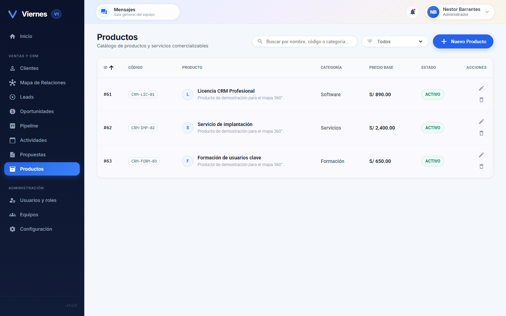
Listado de productos
| Columna | Qué contiene |
|---|---|
| ID | Número interno del producto. |
| Código | Identificador único dentro del catálogo (ej. SRV-001). |
| Producto | Nombre comercial. |
| Categoría | Agrupación libre: software, servicios, hardware, etc. |
| Precio base | Precio de lista antes de impuestos. |
| Estado | Activo, Inactivo o Descontinuado. |
| Acciones | Editar y Eliminar. |
Usa el buscador (nombre, código o categoría) y el filtro de estado para acotar el listado. Las columnas se pueden ordenar.
Estados del producto
ACTIVO
Producto vigente y disponible comercialmente. Es el estado normal de un producto que se sigue vendiendo.
INACTIVO
Se conserva en el catálogo y en propuestas históricas, pero no debería ofrecerse en nuevas cotizaciones.
DESCONTINUADO
Producto retirado. Úsalo cuando ya no se comercializa y no volverá a ofrecerse.
Crear o editar un producto
- Haz clic en “Nuevo Producto” o en el ícono de edición de una fila.
- Escribe un código único y fácil de reconocer (máx. 50 caracteres).
- Define el nombre comercial (máx. 200) y, si aplica, la categoría (máx. 100).
- Ingresa el precio base (no negativo).
- Elige el estado del producto.
- Agrega una descripción de hasta 1000 caracteres con características y alcance.
- Haz clic en “Crear producto” o “Guardar cambios”.
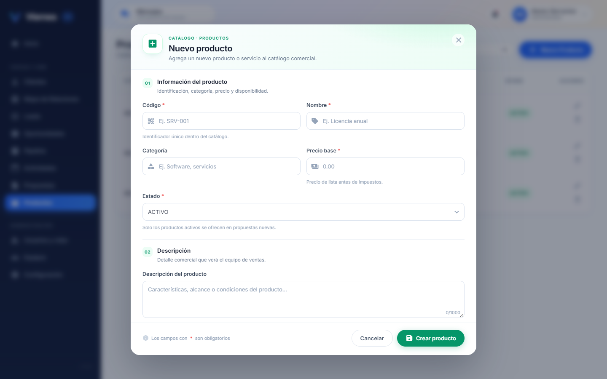
| Campo | Obligatorio | Descripción |
|---|---|---|
| Código | Sí | Identificador único (máx. 50). |
| Nombre | Sí | Nombre comercial (máx. 200). |
| Categoría | No | Agrupación del producto (máx. 100). |
| Precio base | Sí | Precio de lista antes de impuestos. |
| Estado | Sí | Activo, Inactivo o Descontinuado. |
| Descripción | No | Características, alcance o condiciones (máx. 1000). |
Usuarios y roles
El módulo de Usuarios administra las cuentas del equipo comercial y el rol de cada persona. El rol determina las acciones disponibles: no es solo una etiqueta, sino el nivel de permiso que valida el backend en cada operación.
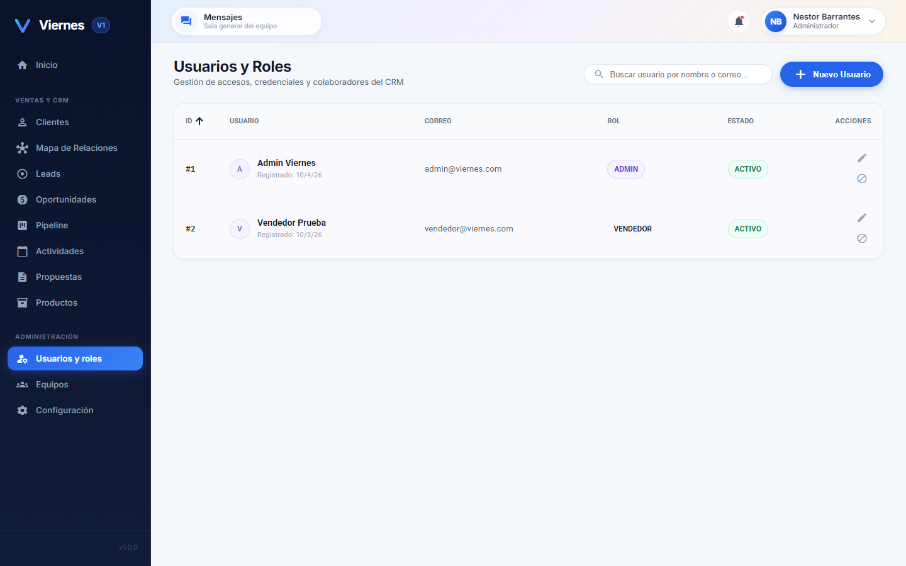
Listado de usuarios
| Columna | Qué contiene |
|---|---|
| ID | Número interno del usuario. |
| Usuario | Nombre y apellido del colaborador. |
| Correo | Identificador de acceso. Debe ser único. |
| Rol | Administrador, Jefe de equipo o Vendedor. |
| Estado | ACTIVO o INACTIVO. |
| Acciones | Editar y activar/desactivar la cuenta. |
Los tres roles
Administrador (ADMIN)
Acceso total al CRM. Único rol que puede eliminar clientes, leads, oportunidades, propuestas y actividades, y el único que administra usuarios.
Jefe de equipo (JEFE)
Supervisión y reportes. Gestiona catálogos, equipos y etiquetas, y aprueba, rechaza o cancela propuestas.
Vendedor (VENDEDOR)
Gestión comercial diaria: clientes, leads, oportunidades, actividades y propuestas en borrador o enviadas.
Crear un usuario
- Haz clic en “Nuevo Usuario”.
- Completa nombre y apellido.
- Ingresa el correo que usará la persona para iniciar sesión.
- Define una contraseña de al menos 8 caracteres. Puedes mostrarla con el ícono del ojo.
- Selecciona el rol en las tarjetas: Administrador, Jefe de equipo o Vendedor.
- Haz clic en “Crear usuario”.
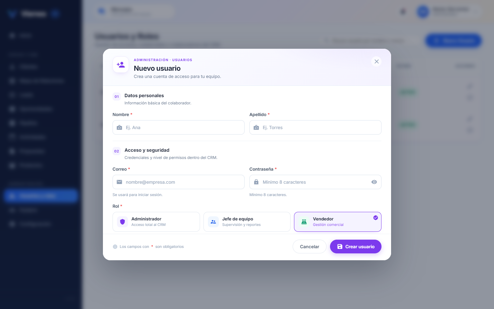
| Campo | Obligatorio | Descripción |
|---|---|---|
| Nombre | Sí | Nombre del colaborador. |
| Apellido | Sí | Apellido del colaborador. |
| Correo | Sí | Debe ser único y válido; se usa para iniciar sesión. |
| Contraseña | Sí al crear | Mínimo 8 caracteres. Al editar, déjala en blanco para conservar la actual. |
| Rol | Sí | ADMIN, JEFE o VENDEDOR. |
viernes-realm). Crear el usuario en el CRM registra
sus datos y su rol, pero no crea automáticamente la cuenta en Keycloak.
El administrador debe dar de alta las credenciales en Keycloak con el
mismo correo y asignar el rol correspondiente para que la persona
pueda iniciar sesión.
Editar, desactivar y reactivar
- Editar: permite cambiar nombre, apellido, correo y rol. La contraseña solo se actualiza si escribes una nueva.
- Desactivar: el usuario queda en estado INACTIVO. Úsalo cuando una persona deja el equipo sin borrar su historial.
- Reactivar: vuelve a dejarlo ACTIVO con el mismo rol.
Equipos
Los equipos agrupan usuarios del CRM para reflejar la estructura comercial: equipos por sede, por segmento, por línea de producto o por gerencia. Un usuario puede pertenecer a uno o varios equipos.
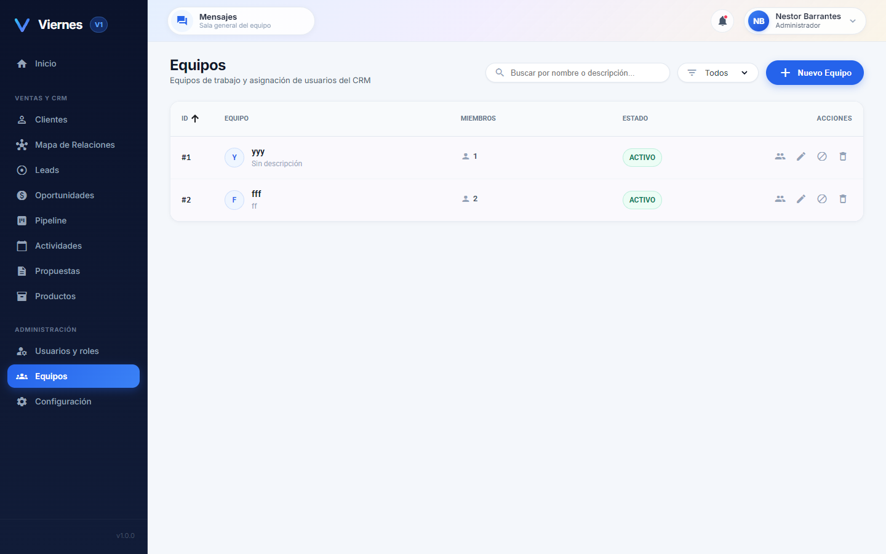
Listado de equipos
| Columna | Qué contiene |
|---|---|
| ID | Número interno del equipo. |
| Equipo | Nombre y descripción del equipo. |
| Miembros | Cantidad de usuarios asignados. |
| Estado | Activo o inactivo. |
| Acciones | Gestionar miembros, editar y eliminar. |
Crear un equipo
- Haz clic en “Nuevo Equipo”.
- Escribe el nombre del equipo (máx. 120 caracteres).
- Agrega una descripción con el objetivo o alcance (máx. 500).
- Haz clic en “Crear equipo”.
- En el mismo formulario, usa “Agregar usuario” para sumar miembros.
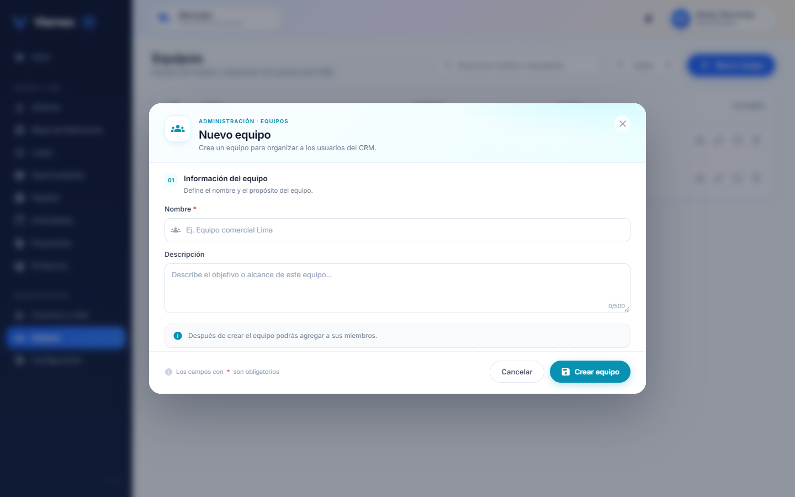
Gestionar miembros
- Agregar: selecciona un usuario de la lista y pulsa “Agregar”. Los usuarios que ya son miembros aparecen deshabilitados con la marca “Ya es miembro”.
- Quitar: en la fila del miembro, usa el ícono de quitar. La persona deja de pertenecer al equipo, pero conserva su cuenta y su historial.
- Fechas: cada miembro muestra la fecha en que fue agregado.
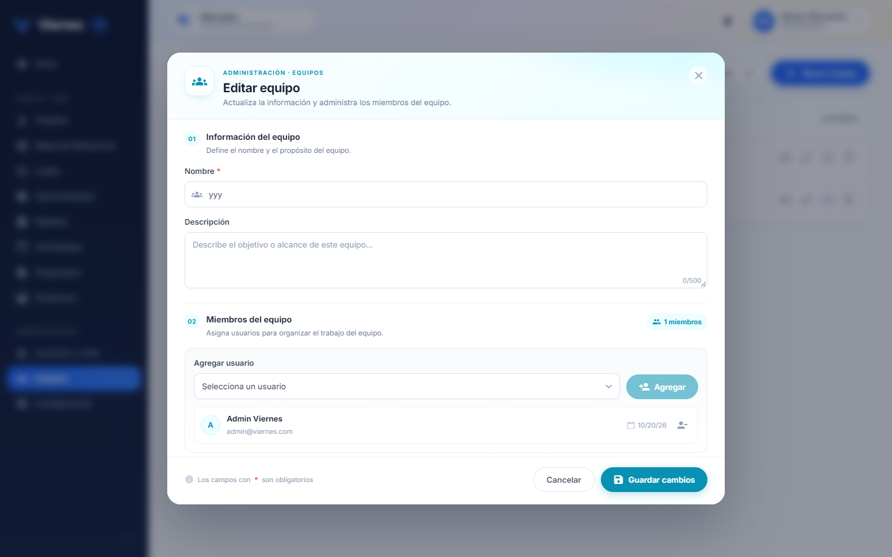
Mensajería interna
La mensajería interna permite conversar con el equipo sin salir del CRM. Es una sala general compartida por todos los usuarios: no hay mensajes privados ni canales por equipo en esta versión.
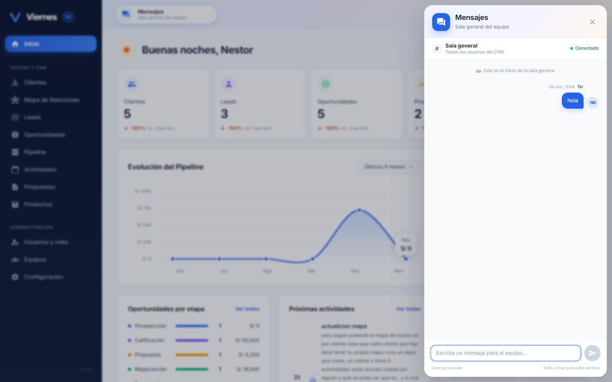
Abrir la mensajería
- En la barra superior, haz clic en el ícono de Mensajes (globo de conversación).
- Se abre el panel lateral “Mensajes” con la sala general.
- Escribe en la caja inferior y pulsa Enter para enviar.
- Usa Shift + Enter para insertar un salto de línea sin enviar.
- Cierra el panel con la × o haciendo clic fuera de él.
Cómo funciona
| Elemento | Comportamiento |
|---|---|
| Sala general | Único canal disponible. Todos los usuarios del CRM participan. |
| Historial | Muestra los mensajes con autor, hora y burbuja. Tus mensajes se alinean a la derecha. |
| Estado | Conectado si el backend responde; Sin conexión si no hay comunicación. |
| Límite | Máximo 2000 caracteres por mensaje. |
| Actualización | El panel consulta mensajes nuevos cada 5 segundos. |
| Vacío | Si nadie ha escrito, verás “Aún no hay mensajes”. |
Configuración
La opción Configuración aparece en el menú lateral solo para el rol ADMIN, pero en la versión 1.0 la pantalla está vacía y reservada. No contiene parámetros editables ni opciones de personalización.
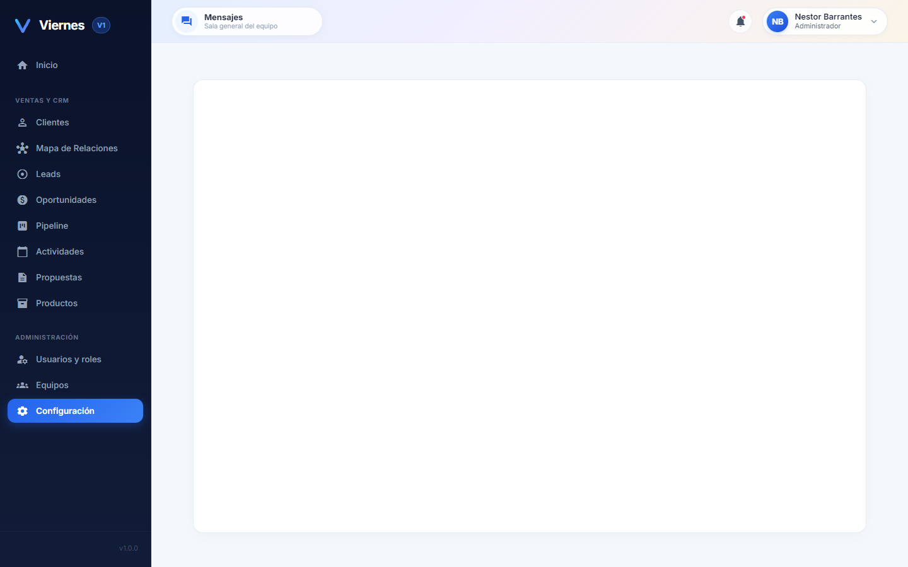
Qué encontrarás hoy
- Un lienzo vacío, sin formularios ni tablas.
- Ningún cambio se guarda desde esta pantalla.
- Los catálogos se gestionan en sus propios módulos: Productos, Etiquetas, Equipos y Usuarios.
Flujo de trabajo recomendado
Viernes CRM está diseñado para recorrer un embudo comercial completo. Este es el camino recomendado, desde el primer contacto hasta el cierre y la postventa.
El ciclo completo, paso a paso
- Capta el lead. Regístralo en Leads con nombre, empresa, correo, teléfono, fuente y campaña. Anota el origen para poder medir qué canal funciona.
- Califica. Agenda una actividad de llamada o reunión. Si no hay interés real, marca el lead como perdido con un motivo claro.
- Convierte el lead. Cuando haya intención de compra, crea el cliente (con DNI/RUC y contactos) y la oportunidad en el pipeline.
- Trabaja la oportunidad. Avanza por las etapas Prospección, Calificación, Propuesta y Negociación. Ajusta la probabilidad y registra cada interacción como actividad.
- Cotiza. Crea una propuesta vinculada a la oportunidad y al cliente, agrega los productos activos y revisa el total.
- Envía y da seguimiento. Pasa la propuesta a ENVIADA y programa una actividad de seguimiento con fecha concreta.
- Cierra. Si el cliente acepta, aprueba la propuesta (ADMIN/JEFE) y mueve la oportunidad a Ganada. Si rechaza, registra el motivo y mueve a Perdida o mantén la negociación si hay una nueva ruta.
- Postventa. Crea actividades de seguimiento, registra incidencias y usa el Mapa de Relaciones para entender conexiones entre contactos, oportunidades y equipos.
Rutina sugerida
| Frecuencia | Qué revisar |
|---|---|
| Al inicio del día | Dashboard, actividades vencidas o de hoy, mensajes del equipo y oportunidades que requieren acción. |
| Durante el día | Registra cada llamada o reunión como actividad; actualiza la etapa de la oportunidad en cuanto cambie; responde en la sala general. |
| Al cierre del día | Marca actividades completadas, deja notas del resultado y programa el siguiente paso con fecha. |
| Semanal | Revisa el pipeline por etapa, propuestas enviadas sin respuesta y leads sin actividad futura. |
| Mensual | Analiza conversión, tendencias del dashboard, y depura leads y oportunidades sin movimiento. |
Preguntas frecuentes
No puedo iniciar sesión. ¿Qué reviso?
Verifica que Keycloak esté encendido y disponible, que el correo exista en el
realm viernes-realm y que la contraseña sea correcta. Si el sistema
muestra un error de conexión con el servicio de identidad, avisa al administrador.
¿Por qué el menú me muestra una acción y luego recibo un error de permisos?
La interfaz puede mostrar botones disponibles para todos, pero el backend valida el rol. Por ejemplo, un VENDEDOR ve “Aprobar” o “Cancelar propuesta”, pero solo ADMIN y JEFE pueden ejecutarlas. Si recibes un 403, solicita la acción a un jefe o administrador.
¿Por qué no puedo eliminar un cliente, lead u oportunidad?
La eliminación definitiva está reservada al rol ADMIN. Si tu rol es JEFE o VENDEDOR, puedes editar y actualizar el registro, pero no borrarlo.
¿Por qué no aparece la etapa “Contacto” en el Kanban?
El pipeline visual usa las etapas Prospección, Calificación, Propuesta, Negociación, Ganada y Perdida. La etapa Contacto existe en el formulario y en el listado, pero no tiene columna en el tablero. Si necesitas usarla, hazlo desde el formulario o el listado.
¿Qué significa el porcentaje de conversión del dashboard?
Es la relación entre oportunidades y el total de leads más oportunidades
(oportunidades / (leads + oportunidades)). No es la tasa de cierre
de propuestas. Para medir cierre, compara oportunidades Ganadas contra el total
de oportunidades cerradas.
¿Por qué una propuesta ya no se puede editar?
Solo los borradores son editables. Al pasar a ENVIADA, la propuesta queda en solo lectura. Si hay un error, pide a un ADMIN o JEFE que la cancele y crea una nueva.
El total de mi propuesta no coincide. ¿Cómo se calcula?
Subtotal = suma de cantidad × precio unitario de cada línea. Total = subtotal − descuento. El descuento es un monto fijo, no un porcentaje. Revisa que no haya líneas duplicadas y que el descuento no supere el subtotal.
Consulté un DNI o RUC y no se completaron los datos. ¿Qué hago?
La consulta depende del servicio externo (APISPERU) y tiene un límite de 20 consultas por minuto por usuario. Si falla, espera un momento y vuelve a intentarlo, o completa los datos manualmente. Verifica también que el documento tenga el formato correcto.
La mensajería dice “Sin conexión”. ¿Perdí los mensajes?
No necesariamente. El estado indica que el panel no pudo comunicarse con el backend en ese momento. Verifica la conexión, recarga la página y vuelve a abrir Mensajes. El historial se conserva en el servidor.
¿Puedo escribirle a una sola persona por mensajería?
No en la versión 1.0. Solo existe la sala general para todos los usuarios. Para conversaciones privadas o formales, usa el correo corporativo o registra la comunicación como actividad del cliente.
¿Por qué Configuración está vacía?
Es una sección reservada para futuras versiones. En V1.0 no tiene funcionalidad. Los catálogos y las cuentas se gestionan en sus módulos correspondientes.
¿Puedo usar el CRM desde el celular?
La interfaz es adaptable y funciona en pantallas pequeñas, pero la experiencia completa está pensada para escritorio. En móvil, el Mapa de Relaciones y las tablas anchas pueden requerir desplazamiento horizontal.
¿Puedo imprimir o guardar el manual en PDF?
Sí. Usa el botón “Imprimir / PDF” de la barra superior o Ctrl + P. El documento incluye estilos de impresión que ocultan el menú y adaptan las tablas y figuras.
¿Dónde reporto un error o una mejora?
Contacta al administrador del sistema con una descripción del problema, la pantalla donde ocurrió y, si es posible, una captura. No compartas contraseñas ni tokens de acceso.
Glosario
Estos términos aparecen en el CRM y en las conversaciones del equipo. Usarlos de forma consistente evita malentendidos al registrar y reportar información.
| Término | Definición |
|---|---|
| CRM | Customer Relationship Management. Sistema para gestionar clientes, prospectos, oportunidades y la relación comercial. |
| Lead | Contacto inicial con posible interés. Aún no es cliente ni oportunidad; debe calificarse. |
| Cliente | Persona o empresa con la que ya existe una relación comercial registrada. |
| Contacto | Persona vinculada a un cliente: cargo, correo, teléfono y rol en la decisión. |
| Oportunidad | Negocio potencial con valor, probabilidad, etapa y fecha estimada de cierre. |
| Pipeline | Vista del embudo de ventas, normalmente en columnas por etapa. |
| Etapa | Posición de la oportunidad dentro del embudo: Prospección, Calificación, Propuesta, Negociación, Ganada o Perdida. |
| Probabilidad | Porcentaje estimado de cierre de una oportunidad. Se usa para calcular el valor ponderado. |
| Valor ponderado | Valor de la oportunidad multiplicado por su probabilidad: valor × probabilidad / 100. |
| Actividad | Tarea concreta de seguimiento: llamada, reunión, tarea o seguimiento, con fecha y estado. |
| Etiqueta | Clasificación flexible de actividades por tema, prioridad o campaña. |
| Propuesta | Oferta económica formal enviada al cliente, con detalles, precios y condiciones. |
| Borrador | Estado inicial y editable de una propuesta, antes de enviarla. |
| Subtotal | Suma de cantidad × precio unitario de todas las líneas de una propuesta. |
| Descuento | Monto fijo que se resta del subtotal para obtener el total. |
| Producto | Ítem cotizable del catálogo: licencia, servicio, plan o bien. |
| Equipo | Agrupación de usuarios para organizar el trabajo comercial. |
| Rol | Nivel de permisos de un usuario: ADMIN, JEFE o VENDEDOR. |
| Keycloak | Servicio de identidad que autentica a los usuarios mediante OIDC y emite los tokens de acceso. |
| Token | Credencial temporal que el frontend envía al backend para autorizar cada petición. |
| Mapa de Relaciones | Vista gráfica de las conexiones entre clientes, contactos, oportunidades, actividades y equipos. |
| KPI | Indicador clave de desempeño. En el dashboard: clientes, leads, oportunidades, valor del pipeline y conversión. |
| Conversión | Proporción de oportunidades sobre el total de leads y oportunidades registrados. |
| Tendencia | Comparación del mes actual contra el mes anterior, según la fecha de creación de los registros. |
| DNI / RUC | Documentos de identidad tributaria en Perú. El CRM puede consultarlos para autocompletar datos. |
| API / Swagger | Interfaz técnica del backend y su documentación interactiva, disponible en /swagger-ui.html. |
Permisos y buenas prácticas
Esta matriz resume las reglas efectivas del sistema. El backend es la autoridad final: aunque la interfaz muestre una acción, la petición solo se ejecuta si el rol del usuario lo permite.
| Acción | ADMIN | JEFE | VENDEDOR |
|---|---|---|---|
| Ver dashboard, clientes, leads, oportunidades, actividades, propuestas, productos y mensajería | ✓ | ✓ | ✓ |
| Abrir Usuarios y roles desde el menú | ✓ | ✕ | ✕ |
| Abrir Equipos desde el menú | ✓ | ✓ | ✕ |
| Abrir Configuración (pantalla reservada en V1) | ✓ | ✕ | ✕ |
| Crear y editar clientes, leads, oportunidades y actividades | ✓ | ✓ | ✓ |
| Eliminar clientes, leads, oportunidades o actividades | ✓ | ✕ | ✕ |
| Crear, editar y enviar propuestas (en borrador) | ✓ | ✓ | ✓ |
| Aprobar, rechazar o cancelar propuestas | ✓ | ✓ | ✕ |
| Eliminar propuestas (solo en borrador) | ✓ | ✕ | ✕ |
| Crear, editar o eliminar productos y etiquetas | ✓ | ✓ | ✕ |
| Crear, editar o eliminar equipos y gestionar sus miembros | ✓ | ✓ | ✕ |
| Crear, editar, activar o desactivar usuarios | ✓ | ✕ | ✕ |
| Participar en la sala general de mensajería | ✓ | ✓ | ✓ |
| Configurar parámetros del sistema desde el CRM | ✕ | ✕ | ✕ |
El grupo Administración del menú solo se muestra a ADMIN y JEFE. Dentro de él, Usuarios y Configuración son exclusivos de ADMIN; Equipos está disponible para ambos. “Configuración” figura como pantalla reservada porque aún no expone parámetros editables en V1.0.
Buenas prácticas generales
📝 Registra en el momento
Anota la llamada, la reunión o el cambio de etapa mientras la información está fresca. Un CRM desactualizado no sirve para decidir.
🎯 Un registro, un dueño
Cada lead y oportunidad debe tener un responsable claro. Evita duplicados buscando por correo, documento o empresa antes de crear.
📅 Siempre un próximo paso
Toda oportunidad activa debería tener al menos una actividad futura con fecha. Si no la tiene, está en riesgo de enfriarse.
💬 Documenta el contexto
Usa descripciones y observaciones para necesidades, objeciones y acuerdos. La siguiente persona debe entender el caso sin preguntarte.
📊 Mide con criterio
No confundas conversión del dashboard con tasa de cierre. Define con el equipo qué indicador se revisa cada semana y cómo se calcula.
🧹 Depura con responsabilidad
Prefiere desactivar o marcar como perdido antes que eliminar. La eliminación es irreversible y está reservada a ADMIN.
Seguridad y acceso
- Credenciales personales: nunca compartas tu contraseña ni tu sesión. Cada acción queda asociada a tu usuario.
- Equipos compartidos: cierra sesión al terminar, especialmente en laptops de sala o de demostración.
- Permisos mínimos: asigna ADMIN solo a quien administra usuarios y depura información; usa JEFE para supervisión y VENDEDOR para la operación diaria.
- Datos sensibles: no pegues contraseñas, tokens ni datos completos de tarjetas en descripciones, observaciones o mensajes.
- Altas y bajas: cuando alguien deja el equipo, desactiva su usuario en el CRM y su cuenta en Keycloak.
- Respaldo: la base de datos Oracle y la configuración de Keycloak las administra el equipo técnico; el CRM no reemplaza un plan de respaldo.
Antes de pedir soporte
- Confirma que el backend, el frontend y Keycloak estén encendidos.
- Recarga la página e inicia sesión nuevamente.
- Verifica tu rol y si la acción está permitida para él.
- Anota la pantalla, la acción realizada, la hora y el mensaje de error.
- Si es posible, adjunta una captura y el identificador del registro afectado.